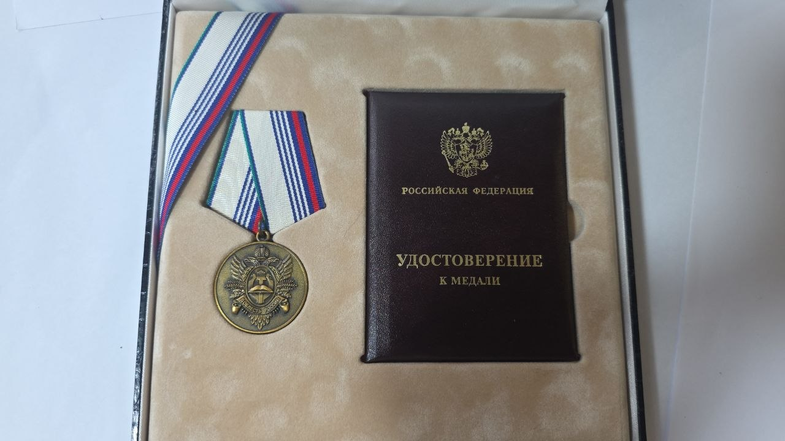

Екатерина Климова
Практикующий психолог, 20 лет практической работы с клиентами

Когда в отношениях и жизни тупик , выход есть. Я помогу вам его найти.
Когда в отношениях и жизни тупик , выход есть. Я помогу вам его найти.

Меня зовут Екатерина. Я практикующий психолог с 20-летним опытом работы. Мой профессиональный опыт позволяет эффективно помогать клиентам находить выход из сложных жизненных ситуаций, разбираться в отношениях, принимать важные решения и восстанавливать внутреннюю устойчивость — особенно в моменты, когда тяжело, тревожно и кажется, что вы зашли в тупик.

Каждая встреча — это пространство безоценочного принятия,
где вы можете быть собой. Я верю, что у каждого человека есть силы для изменений, и моя роль — помочь вам эти силы раскрыть.
Почему работа со мной эффективна?
Потому что я работаю с глубокими слоями травы, именно там находятся:
-эмоциональные заряды прошлого,
-убеждения,
-страхи,
-непрожитые чувства,
-реакции, которые вы не контролируете.
Наши реакции — это не случайность. Они имеют источник.
Когда человек добирается до первопричины и проживает её осознанно и безопасно — меняется состояние, поведение, эмоции и тело:
-снижается тревога, наступает спокойствие
-исчезают триггеры и формируются новые реакции
-уходит напряжение и возвращается ресурсное состояние
-возвращается спокойствие,
-приходит облегчение и чувство внутреннего контроля и опоры.

Я работаю в интегративном подходе, сочетая современные доказательные методы психотерапии.
В своей практике я использую:
КПТ (когнитивно-поведенческую терапию) — помогает увидеть и изменить устойчивые мысли и реакции, которые поддерживают тревогу, чувство вины, неуверенность и повторяющиеся трудности.
Схемотерапию — глубинную работу с жизненными сценариями, которые формируются в детстве и затем повторяются во взрослых отношениях и выборе партнёров.
Гештальт-подход — помогает лучше понимать свои чувства, потребности и выстраивать более живой и честный контакт с собой и другими.
EMDR / ДПДГ — современный метод переработки травматичного опыта и болезненных воспоминаний.
IFS (терапия с частями личности) — работа с внутренними частями: внутренним ребёнком, внутренним критиком, уязвимыми и защитными частями. Помогает восстановить внутреннюю целостность и снизить внутренний конфликт.
ACT (терапия принятия и ответственности) — учит не бороться с чувствами, а проживать их экологично и двигаться к ценностям, даже в сложные периоды.
SFT (краткосрочная терапия, ориентированная на решение) — помогает сфокусироваться не на проблеме, а на конкретных шагах к желаемым изменениям.
IST (интегративный подход к работе с травмой и внутренними состояниями) — позволяет мягко и глубоко работать с эмоциональными блоками и повторяющимися реакциями.
Системную семейную терапию — когда важно рассмотреть проблему в контексте отношений и семейной динамики.

Приглашаю вас в совместное путешествие к осознанной, полной и гармоничной жизни. Вы достойны жить так, как хотите, и быть в контакте с собой и окружающим миром.
Помощь в понимании своих чувств, проработка внутренних конфликтов, работа с самооценкой, страхами, жизненными трудностями и поиском новых опор.
Поддержка в решении межличностных проблем, восстановление взаимопонимания между супругами, детьми и родителями, помощь в преодолении кризисов в отношениях.
Обучение методам снижения уровня тревоги, развитие навыков управления стрессом, восстановление внутреннего спокойствия и уверенности в себе.
5 000 ₽
6 600 ₽
23 000 ₽
45 000 ₽
В связи с текущей блокировкой мессенджеров и интернета, вы можете связаться со мной напрямую по номеру телефона:
+79773829386
katerina.klimova1@gmail.com
Или напишите письмо:
✉️ katerina.klimova1@gmail.com(Напишите письмо со словом "Привет" в теме, и я отвечу)
Рабочее время с 10 до 21 часа (мск)